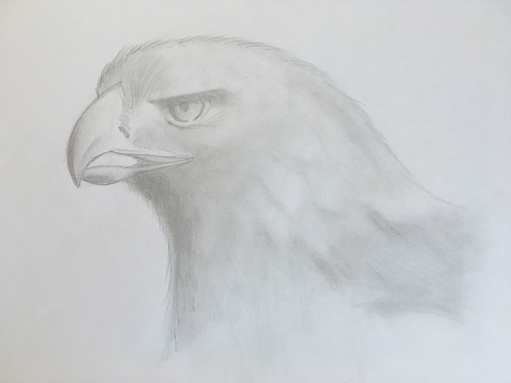

Personalmente, el dibujo comenzó como un sueño frustrado para mí debido a que sentía que no contaba con el talento para desplegar en papel lo que mi mente imaginaba. Aún no soy capáz de dibujar sin referencia pero ahora reconozco que es por falta de práctica y no de talento.
Lo que comenzó como curiosidad rápidamente se convirtió en un pasatiempo que ahora me permite desconectarme del mundo por unas cuantas horas cada vez que decido practicarlo. Aunque muy a mi pesar, también debo admitir que se convirtió en un distractor cuando me encuentro estudiando (Ver Imagen 3).

Uno de los artistas cuyo arte más admiro es Stephen Travers. Aunque su trabajo es variado, él se enfoca mayormente a dibujo urbano, que es mi tipo favorito, por lo que puedo pasar horas viendo sus tutoriales y timelapses para aprender nuevas técnicas y obtener inspiración.
Si bien no cuento con una página dedicada al dibujo que pueda compartir, ocasionalmente comparto lo que dibujo en mi Instagram.